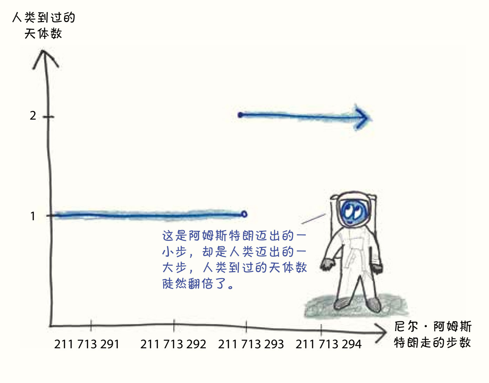
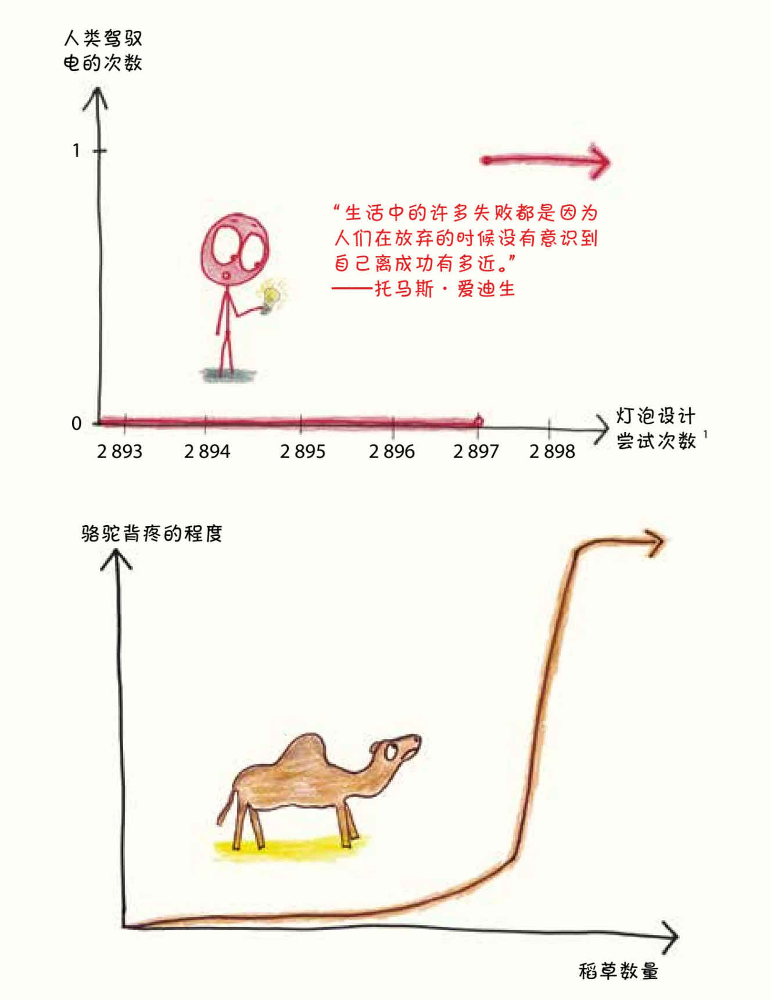
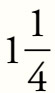
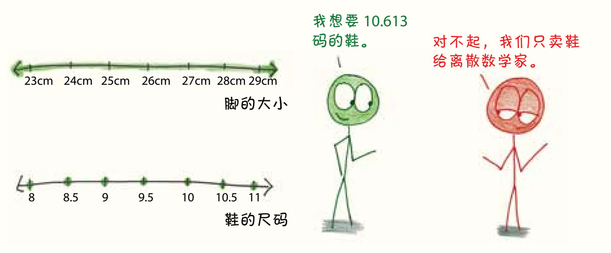

第五部分 转折点：一步的力量
带着计步器的人对自己每天走多少步非常清楚：待在家里的一天只走了3 000步；忙忙碌碌的一天走了12 000步；被狗熊追逐的一天走了40 000步（如果不幸遇到一只跑得快的狗熊，也有可能只走四五步就被扑倒了）。
这种计数掩盖了一个我们都知道的事实：并非每一步都是相同的。


在数学中有两种变量：连续变量（continuous variable）和离散变量（discrete variables）。连续变量可以以任何增量变化，无论这个增量多么小。我可以喝1升的无糖苏打水，也可以喝2升，或是任何介于两者之间能溶掉我牙齿的量。摩天大楼的高度可以是300米，也可以是300.1米或300.029 851 7米。对于任意两个数字来说，无论它们多么接近，我们都可以继续细分它们之间的差异。
相较之下，离散变量的变化是跳跃的。你可以有1个或2个兄弟姐妹，但不可能有

个。当你买一支铅笔时，商店可以收50美分或51美分，但不能收50.438 71美分。2对于离散变量而言，有些数字之间是不能分割的。
生活是连续变量和离散变量的有趣组合。冰淇淋的量是连续的（给人持续的快乐），但冰淇淋的尺寸则是离散的。工作面试的质量会连续不断变化，但是任何申请产生的工作机会数量都是离散的（0个或1个）。车辆的行驶速度是连续的，但速度的极限则是个单独的离散变量。
这种从连续到离散的转换过程可以将微小的增量放大为巨大的变化。一丁点儿的加速度可能就会让你得到一张超速罚单；在面试中，一个不雅的饱嗝可能会让你失去这份工作；想要多吃一点儿冰淇淋的欲望迫使你点了一桶超大的冰淇淋，尽管这种欲望并不是你的错。
这些就是在一个把“连续”变成“离散”的世界里会发生的事情。对于生命中的每一个转折，都有一个关键的转折点——那是一个无限小的步骤，但它具有改变一切的力量。